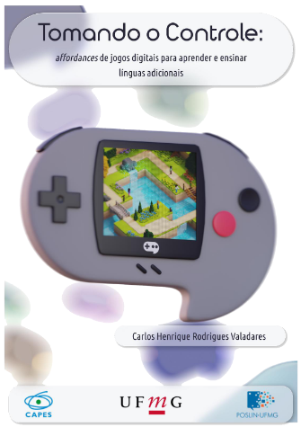
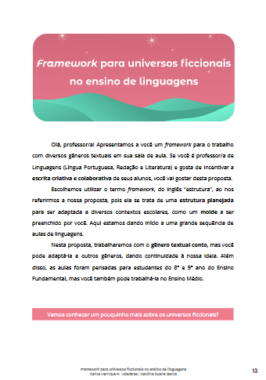

Publicações e Destaques
Videogames na aprendizagem formal de Língua Inglesa
Valadares; Coelho, 2022

Valadares, 2023

Valadares; Garcia, 2022
Valadares, 2025
Artigo - Videogames na aprendizagem formal de Língua Inglesa
VALADARES, C. H. R.; COELHO, H. S. H. . Videogames na aprendizagem formal de Língua Inglesa. Revista Entrepalavras, v. 11, p. 1-22, 2022.
Dissertação de Mestrado: Tomando o controle: affordances de jogos digitais para aprender e ensinar línguas adicionais
VALADARES, C. H. R. Tomando o controle: affordances de jogos digitais para aprender e ensinar línguas adicionais. 133f. Dissertação (Mestrado em Estudos Linguísticos). Faculdade de Letras, Universidade Federal de Minas Gerais, Belo Horizonte, 2023.
Framework para Universos Ficcionais no ensino de linguagens
VALADARES, C. H. R.; GARCIA, C. D. . Framework para universos ficcionais no ensino de linguagens. In: Newton Vieira Lima Neto; Carolina Duarte Garcia; Elaine Teixeira da Silva; Jéssica Oliveira de Carvalho; Samuel de Sá Ribeiro. (Org.). Letramento Digital e Ensino de Linguagens: coletânea didática para a prática docente. 1ed. São Carlos: Pedro & João Editores, 2022, v. 1, p. 1-163.
Zine - A coruja não vai te ensinar
Zine apresentado em parceria com o grupo Delta UFMG no evento "Minas Summit 2025".